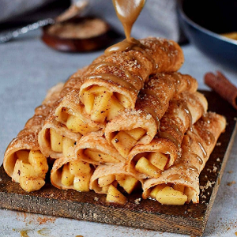

Ingredients
Dry ingredients:
- 1 cup (90 g) oats ground into flour or oat flour
- 1/2 cup (80 g) rice flour
- 4 tbsp (32 g) cornstarch or arrowroot flour
- 2 tbsp coconut sugar or brown sugar
- 1 tbsp flax seeds ground or chia seeds
- 1 tsp baking powder
Wet ingredients:
- 1 1/2 cups (360 ml) plant-based milk I used canned lite coconut milk
- 1 small (80 g) banana
- 1/2 tbsp lemon juice or lime juice
- 1/2 tsp vanilla extract
- oil for frying
Apple Filling:
- 3 apples peeled, cored, and chopped
- 3 tbsp coconut sugar or brown sugar
- 2 tbsp plant-based milk
- 1/2 tbsp lemon juice or lime juice
- 1/2 tsp cornstarch
- 1 tsp cinnamon
Instructions
- To make the crepes simply put all dry ingredients into a bowl and stir with a whisk.
- Process all wet ingredients (except the oil) in a food processor or blender.
- Pour the wet ingredients into the bowl of dry ingredients and stir with a whisk to combine.
- Let the batter rest for a few minutes. Heat a little oil in a small/medium-sized non-stick skillet
over medium heat.
- Pour 1/4 cup of the batter into the skillet, and spread it with the back of a ladle.
- Cook for about 2-4 minutes or until you can easily lift a side of the crepe (don't try to flip the
crepe too early).
- After you flipped the crepe, cook for a further 1-2 minutes.
Note: After a while, the batter will get thicker, so you might need to add more milk.
- Continue until you have no batter left.
- For the apple filling, simply add all ingredients to a skillet or saucepan and stir (without heat).
- Then turn on the heat and bring the mixture to a boil. Let simmer for a few minutes over low/medium
heat.
- Place a few tsp of filling onto each crepe, roll it up and serve with a drizzle of caramel sauce
Source Here